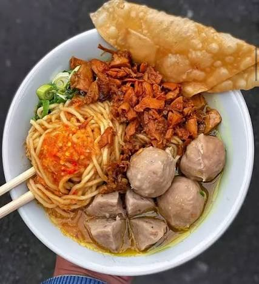

Daftar Makanan
Berikut adalah beberapa makanan favorit saya, mulai dari yang paling saya sukai hingga makanan favorit lainnya.
| Nama Makanan | Asal | Jenis | Rating |
|---|---|---|---|
| Mie Ayam Bakso | Indonesia | Makanan utama | 5/5 |
| Nasi Goreng | Indonesia | Makanan utama | 4/5 |
| Udon | Jepang | Makanan utama | 4/5 |

Tambah Makanan
Masukkan makanan favorit yang ingin ditambahkan ke dalam daftar.
Tentang Saya
Saya membuat halaman ini untuk menampilkan makanan-makanan yang saya sukai. Mie ayam bakso menjadi makanan favorit saya, kemudian nasi goreng dan udon.